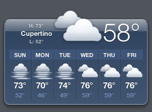
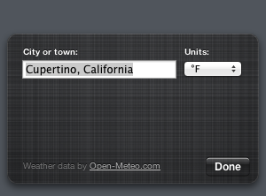

Forecast
By XGZepto · A weather widget for Lion's Dashboard.
Screenshots


Description
Forecast is a weather widget for Lion's Dashboard, drawn to sit next to Apple's own widgets. It shows the temperature, today's high and low, and the next six days.
Dashboard can't load modern secure websites, so Forecast fetches the weather through LionKit's copy of curl. The forecasts come from Open-Meteo, which needs no account or key.
Flip it over to pick a city and choose Celsius or Fahrenheit.
What's New in Version 0.2
- The back of the widget now matches the front.
- It keeps working when a weather request takes a long time.